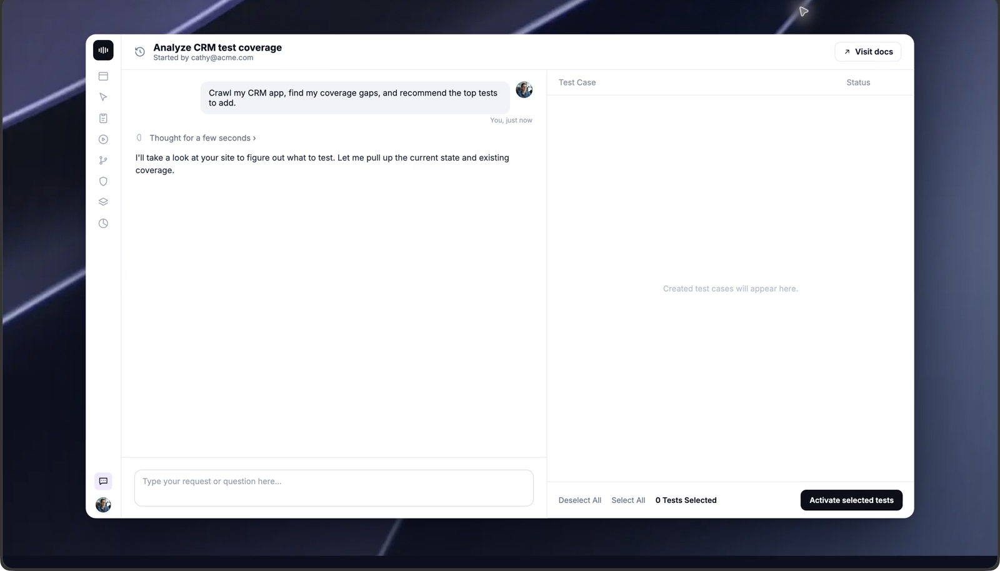
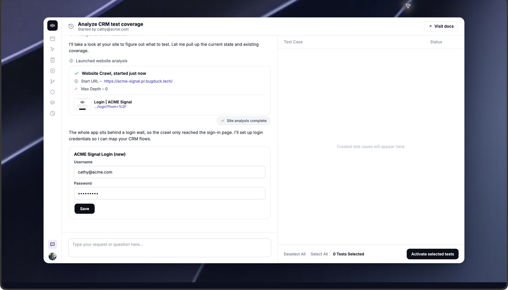
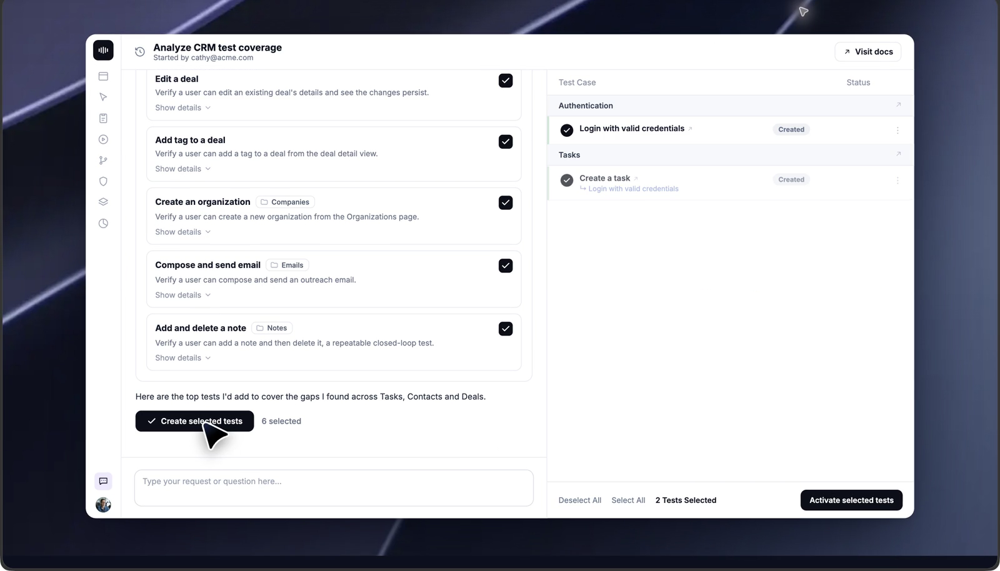
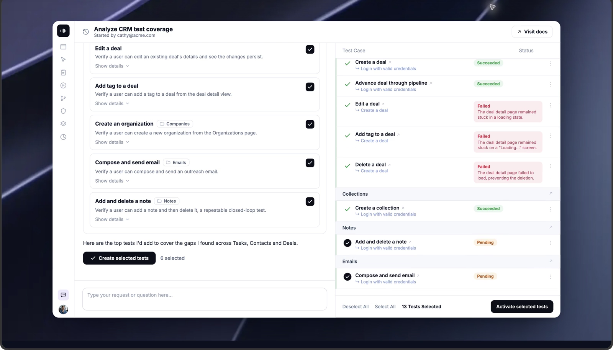
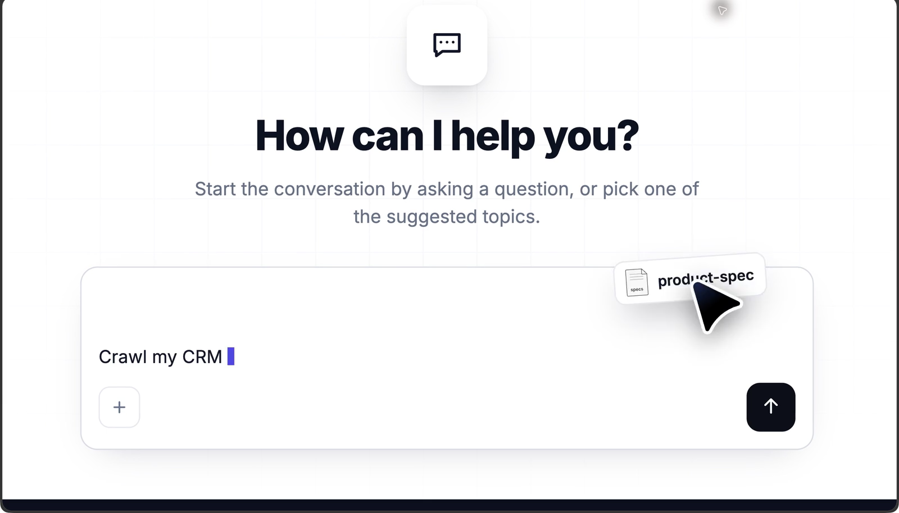
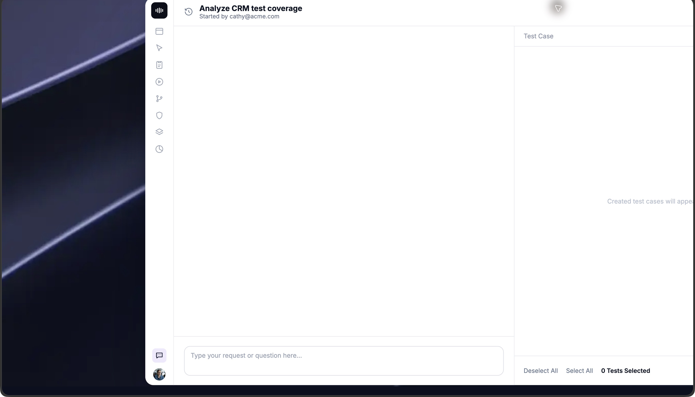
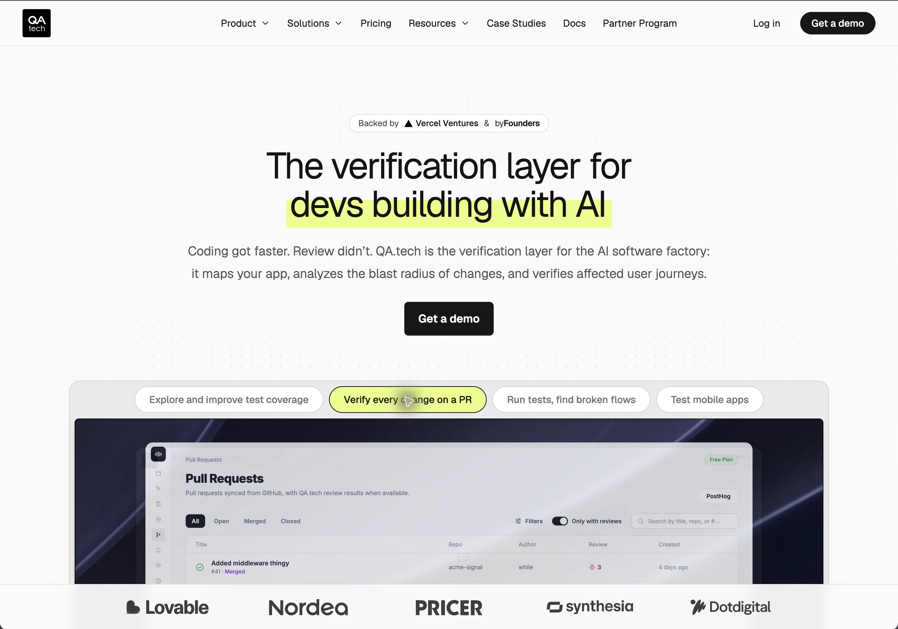

QA.tech — 機能・導線・画面
確認日：2026年10月27日。全体比較・画面／動画ギャラリー
調査範囲
チャットによる作成・変更、PR検証、回帰テスト、Web／モバイル環境。公式Docsを主な根拠とする。
公開紹介の章切替は操作済み。アカウント内の作成・実行・再実行・設定は未操作。テスト提案の承認と顧客業務要求の確定は同一ではない。
作業の流れ
相談／アクセス申請 → Project・Application・Environment → データ／接続 → チャットでテスト作成 → 実行／PR検証 → 結果レビュー → Test Planで継続
機能の構成
Projects・Applications・Environments、AI Chat、Tests、Test Plans、PR・Regression、Test Data・Dependencies、Integrations。公開Docsの構成でありログイン後の常設ナビ全体は未確認。
下表は公開説明・文書の要約。実操作した範囲は画面一覧と調査範囲に限定し、表全体を実機検証済みとはしない。
| 段階 | 画面・機能 | 入力・操作と次の行動 |
|---|---|---|
| 開始 | Projects・Applications & Environments | プロジェクト内でアプリと環境を分け、同じテストを環境に応じて実行する。 |
| 準備 | Environment access・Test Data | Botの許可、私設ネットワーク、認証・入力値を準備。共通値を手順から分離する。 |
| 設計 | AI Chat Assistant | 意図から作成・更新・実行を依頼。提案や変更を人が確認する導線を文書化している。 |
| 構成 | Dependencies・出力状態 | 前提テストの実行順、ブラウザ分離、複数ユーザーの依存関係を管理する。 |
| 実行 | PR Testing・Regression | 変更内容に関係する検証と、選定した既存フローの継続実行を扱う。 |
| 結果 | Review test results | ステップの証拠と結果をレビューし、失敗の原因を確認する。 |
| 運用 | Test Plans | 実行するテスト集合・環境を管理し、手動・定期・CI等の入口へ接続する。 |
| 連携 | MCP・Integrations | 外部Agentから利用する入口と開発工程への接続。申請後の利用範囲は別確認。 |
人の担当と比較上の着眼点
接続・権限・データの用意、業務ルールの補足、提案の確認、結果の判定。
調査者の解釈：アプリ理解・PR・回帰が同じテスト資産に集まる。依存関係とテストデータまで比較しないと継続運用の負担を見落とす。 製品性能の優劣を実証した結論ではない。
動画と見る場面
- QA.techの公開製品アニメーションを実時間で連続撮影（25.9秒、recorded-official-demo）。公式の掲載元。
見る場面：
2秒：coverage分析の依頼、
7秒：Agentの分析、
13秒：候補ケースの提示、
20秒：次の入力へ、
25秒：仕様と指示。


画面一覧
| 画面 | 種別 | 出典 |
|---|---|---|
 公開製品film：AI Chat・coverage・候補tests |
official-ui-example | 掲載元 |
 公開PR検証の章 |
public-demo-ui | 掲載元 |